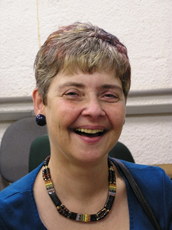
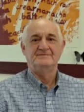
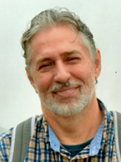
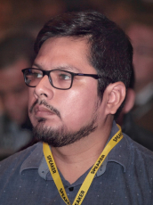
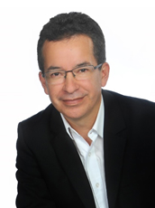
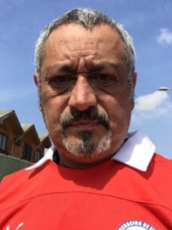
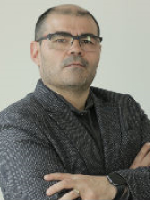

Dra. Claudia Bauzer Medeiros

Claudia Bauzer Medeiros es profesora a tiempo completo de Bases de
Datos en el Instituto de Computación de la Universidad de Campinas (Unicamp), Brasil y miembro
de la Academia Brasileña de Ciencias. Ella ha recibido reconocimientos en Brasil y a nivel
internacional en investigación, enseñanza y también por su trabajo en el fomento de la
participación de las mujeres en actividades relacionadas con las tecnologías de la
información.
Su investigación se centra en el diseño y desarrollo de bases de datos científicas. Su principal
interés radica en afrontar los retos que plantean las grandes aplicaciones del mundo real, que
requieren el manejo de fuentes de datos distribuidas y muy heterogéneas.
Es Comendadora de la Orden Brasileña del Mérito Científico, Dra. Honoris Causa de la Universidad
Antenor Orrego, Perú, y de la Universidad Paris-Dauphine, Francia. Es miembro en general del
Consejo de la ACM, miembro del Consejo de la Research Data Alliance (RDA) y del World Data
System (WDS).
Tema de la conferencia: Compartiendo datos de Covid-19 – Open Science y el
Repositorio FAPESP COVID-19 Data Sharing/BR.
Dr. Francisco Tirado

Francisco Tirado es Catedrático de Arquitectura y Tecnología de
Computadores en la Universidad Complutense de Madrid. Ha trabajado en diferentes campos dentro
de la Arquitectura de Computadores, Procesamiento Paralelo y Automatización del Diseño. Sus
áreas de investigación actuales son algoritmos y arquitecturas paralelas, diseño de
procesadores. El profesor Tirado ha sido coautor de más de 300 publicaciones.
Ha participado en la organización de más de 100 conferencias internacionales como presidente
general, miembro del comité directivo, presidente del programa, miembro del comité del programa,
orador invitado y presidente de la sesión. Ha sido director del CSC (Centro de Supercomputación)
y del Parque Científico de Madrid. El Prof. Tirado es Catedrático de la Sociedad Española de
Informática Científica (SCIE), Doctor “honoris causa” por la Universidad Nacional de Asunción,
Universidad Nacional de San Agustín, Universidad Nacional de La Plata y Universidad de Almería.
El Prof. Tirado es miembro senior de IEEE, miembro de la Sección de Computación de la Academia
Europea y ha recibido el Premio Nacional de Informática de España 2013.
Tema de la conferencia: Evolución de las arquitecturas para HPC y BIG DATA
Dr. Raimundo Macêdo

Raimundo Macêdo es profesor titular en el Departamento de Ciencias
de la Computación y jefe del Laboratorio de Sistemas Distribuidos (LaSiD) de la Universidad
Federal de Bahía (UFBA) en Brasil. Tiene un Ph.D. en Ciencias de la Computación de la
Universidad de Newcastle upon Tyne (Inglaterra).
Es el actual presidente de la Sociedad Brasileña de Computación (SBC) y consejero de la IFIP.
Fue miembro del Comité Directivo de CLEI de 2011 a 2016.
El Prof. Macêdo ha participado y coordinado varios proyectos de investigación con diferentes
instituciones de investigación brasileñas e internacionales, cubriendo muchos aspectos de los
sistemas distribuidos confiables (algoritmos, arquitecturas e implementaciones), y formó parte
del comité de programa de numerosas conferencias sobre el área de sistemas confiables,
incluyendo IEEE / IFIP DSN, IEEE SRDS, LADC (Simposio Latinoamericano de Computación
Dependiente), EDCC (Conferencia Europea de Computación Dependiente), entre otros. Actualmente es
miembro del comité directivo de SRDS (Simposio Internacional sobre Sistemas Distribuidos
Confiables). Sus intereses de investigación incluyen sistemas distribuidos confiables
autogestionables y sistemas ciberfísicos.
Tema de la conferencia: Tolerancia a fallos en sistemas distribuidos dinámicos.
Dr. Miguel Paredes Quiñones

Miguel Paredes Quiñones es
miembro del personal de investigación del grupo de optimización y simulación de recursos
naturales de IBM Research, ubicado en São Paulo, Brasil. Obtuvo su doctorado en ingeniería
eléctrica en la Universidad de Campinas y su maestría en Ingeniería Eléctrica en la Universidad
Estadual de São Paulo. Actualmente investiga técnicas de optimización para simulación de
sistemas físicos mediante IA.
Es embajador cuántico en IBM. Sus principales intereses son: Programación de enteros mixtos no lineales, Optimización convexa,Técnicas de relajación (optimización), Algoritmos de optimización cuántica.
Tema de la conferencia: “Quantum Computing” – La computación cuántica en
la resolución eficiente de problemas.
.
Roberth MingaVallejo

Roberth Minga Vallejo es Cloud Marketing Lead en Microsoft Latam
Región Sur. Encargado de la estrategia de marketing para soluciones en la nube en organizaciones
de Ecuador, Perú, Bolivia, Paraguay y Uruguay. Cuenta más de 20 años de experiencia en
organizaciones de tecnología y comercialización de soluciones de software. Ha participado en
proyectos de desarrollo bancario, así como en la definición de las estrategias de marketing y
comercialización de soluciones como Azure de Microsoft y ha montado empresas que usan el modelo
de plataforma. Su formación es Ingeniería en Sistemas, cuenta con una Maestría en Administración
de empresas y una certificación en Transformación Digital del MIT.
Tema de la conferencia: “Platform Revolution – La evolución de las plataformas”.
Cómo las plataformas están transformando las economías.
Javier Burgos

Xavier Burgos es un
Arquitecto en Jefe para IoT de IBM, con amplia experiencia en desarrollo de soluciones
cognitivas, para Internet de las Cosas basadas en tecnologías abiertas orientadas a la industria
y ciudades inteligentes.
Inventor del framework “Internet de las cosas como un Servicio Cognitivo”.
Impulsor de la democratización del conocimiento y la tecnología. Agitador incansable del
desarrollo de la tecnología hecha en Chile, apoyando la innovación y el emprendimiento. Activo
defensor de la inclusión de la Mujer en temas tecnológicos.
Difusor de las nuevas tecnologías emergentes impartiendo los nuevos conocimientos y habilidades
en academias y colegios, dirigidas empoderar al cuerpo docente y alumnado con foco en la
empleabilidad futura del alumnado.
25 años de experiencia en la industria TI y control de procesos industriales y 5 años
desarrollando soluciones cognitivas para internet de las cosas.
Tema de la conferencia: Internet de las Cosas “Reinvención Digital”
Nelson Wilson

Profesional con 30 años de
experiencia en el área de Tecnología de Información, en su trayectoria ha pasado por todos los
ámbitos de una unidad de TI, soporte, Telecomunicaciones, infraestructura TI y desarrollo de
aplicaciones, en niveles estratégicos, tácticos y operativos. Ha desempeñado cargos en el ámbito
local e internacional permitiéndole participar de proyectos TI y de transformación de gran
impacto en el negocio de compañías de referencia en Chile y América Latina.
En los últimos años ha estado acompañando y asesorando a diversas empresas de referencia en la
región en su Transformación Digital, especialmente desde la perspectiva de TI. Veintiún años en
Everis donde es Socio Responsable de la unidad de Servicios y soluciones TI.
Tema de la conferencia: La nueva IT: Digital IT